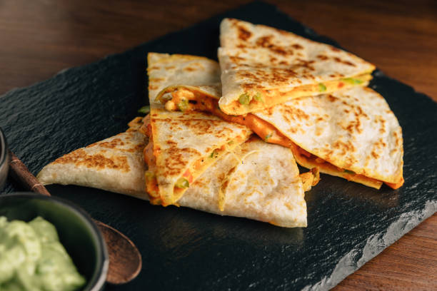

Home
Quesadillas

These chicken quesadillas are easy to make and can come together quick with the right prep work!
Ingredients you will need:
- 2 Chicken Breasts
- Flour Tortillas
- 1 Green Pepper
- Monterey Jack Cheese
- Cheddar Cheese (optional)
- 1 tbsp Olive Oil
- 2 tbsp Vegetable Oil
- 2 Cloves of Garlic
- 1 Juiced Lime
- 1 tsp Sugar
- 1 tbsp Cumin
- 1 tsp Cayenne
- 1 tsp Oregano
- Salt and Pepper to taste
- Add Chicken, Oil, Spices, Sugar, Lime, and Garlic to a sealable bag and let marinate for at least 30 minutes up to 4 hours.
- In a skillet over high heat, add the marinated chicken. Cook until internal temperature registers 165F. Remove from heat.
- Lower the heat to medium, add 1 tbsp of oil and sautee the pepper until soft. About 5-7 minutes. Remove from heat and set aside.
- After both the pepper and chicken is cooked it's time to assemble the quesadilla.
- Layer the Chicken, Peppers, and Cheeses on one half of a tortilla and fold over.
- On a medium low heat add 1 tbsp of vegetable oil and add the folded quesadilla.
- Fry until the bottom side is golden brown, about 2 minutes. Flip and cook the other side for 2 minutes as well.
- Remove from pan, slice into three, and enjoy!